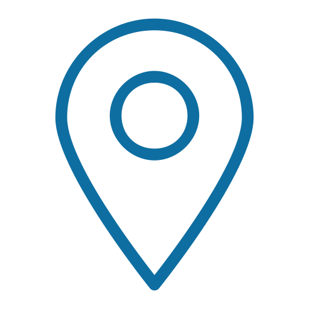

<head>
<meta charset='utf-8' />
<title>Display a map</title>
<meta name='viewport' content='initial-scale=1,maximum-scale=1,user-scalable=no' />
<script src='https://api.tiles.mapbox.com/mapbox-gl-js/v0.46.0/mapbox-gl.js'></script>
<link href='https://api.tiles.mapbox.com/mapbox-gl-js/v0.46.0/mapbox-gl.css' rel='stylesheet' />
<style>
body { margin:0; padding:0; }
#map { position:absolute; top:0; bottom:0; width:100%; }
</style>
</head>
<body>
 
<div id='map'></div>
<script>
mapboxgl.accessToken = 'pk.eyJ1IjoicGhpbG5pY29sYXNqYW1lcyIsImEiOiJjaXYycGU2a2cwMmZ1MnlwNjZ4YWEzbzRmIn0.hZO-ZaGNzM4jXhbvqtOH3w';
const map = new mapboxgl.Map({
container: 'map',
style: 'mapbox://styles/philnicolasjames/cjedfwna22z0f2slkntq3pddu',
center: [ -79.38677787780762,
          43.65119920167507],
zoom: 14.0,
pitch: 50
});
    
var myIcon = L.divIcon({
 className:'',
 html:'<div class="marker"></div>',
 iconSize: [35, 46]
 });
    
	var coords=[[ -79.38677787780762,
          43.65119920167507],[ -79.38677787780762,
          43.66119920167507],[ -79.38677787780762,
          43.67119920167507]]
	coords.forEach(function(n){
		L.marker(n,{icon:myIcon}).addTo(map);
	})
    
    var angle=80;
	window.setInterval(function(){
		$('.rotating').attr('style','-webkit-transform:rotateZ('+angle+'deg);-moz-transform:rotateZ('+angle+'deg);-moz-transition:-moz-transform 0.75s;');
		if ($('.rotating').length>0) $('.pivotmarker').attr('style','-webkit-transform: rotateY('+angle+'deg);-moz-transform: rotateY('+angle+'deg);-moz-transition:-moz-transform 0.75s;');
		angle=angle*-1;
	},3500);
 
</script>
 
</body>
